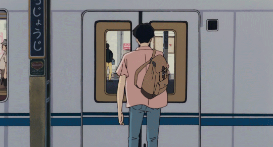
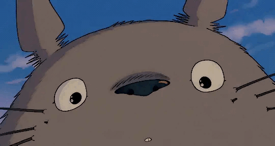

●

Hsin-Chih Chang
Bio-Industrial Mechatronics Engineering
National Chung Hsing University
About Me
Bridging the gap between Technology and Nature. I focus on applying Deep Learning to smart agriculture systems, enabling automated plant health diagnosis and stress detection.
Skills
Python / MATLAB
85%
Deep Learning (U-Net / CNN)
80%
Computer Vision
78%
Research Project
Leaf Analysis System

Using U-Net semantic segmentation to isolate soybean leaves, followed by HSV analysis to calculate flooding-induced yellowing ratio.
Experience
AI Smart Agriculture Project
2025 - Present
Microsoft Differential Equation Workshop
2025
Moments



"Stay hungry, stay foolish."
— Steve Jobs

Now Playing
Ocean Eyes
Billie Eilish
© Built by Hsin-Chih Chang